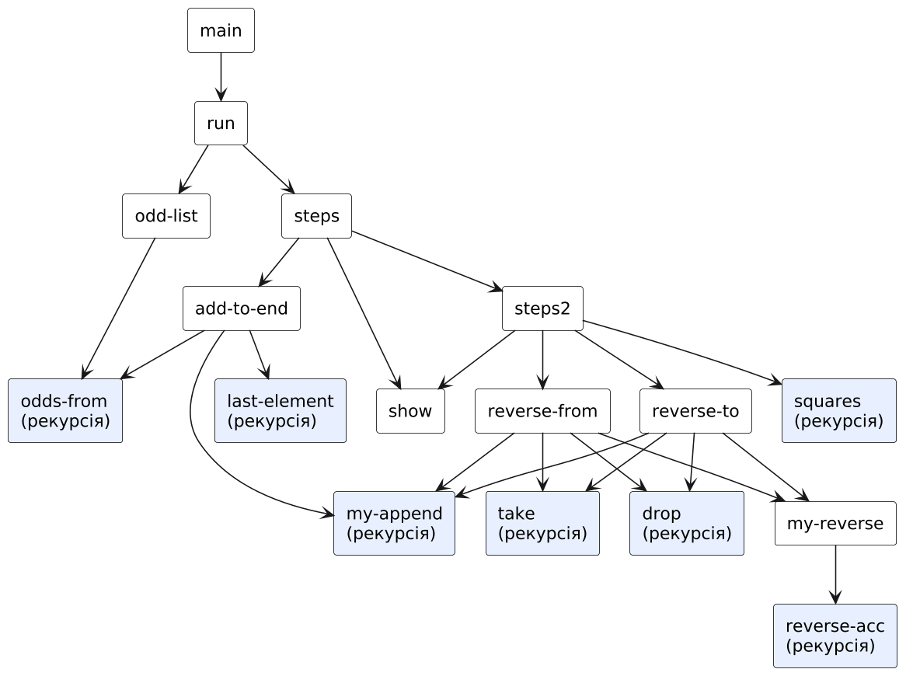
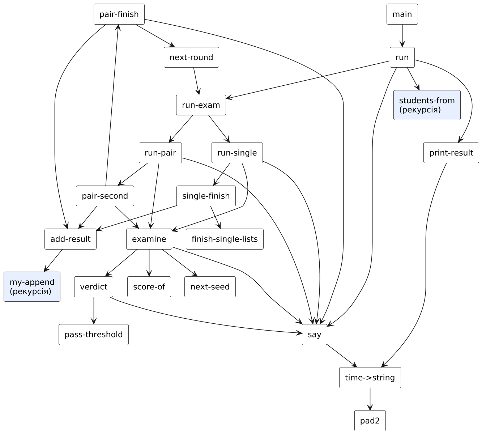
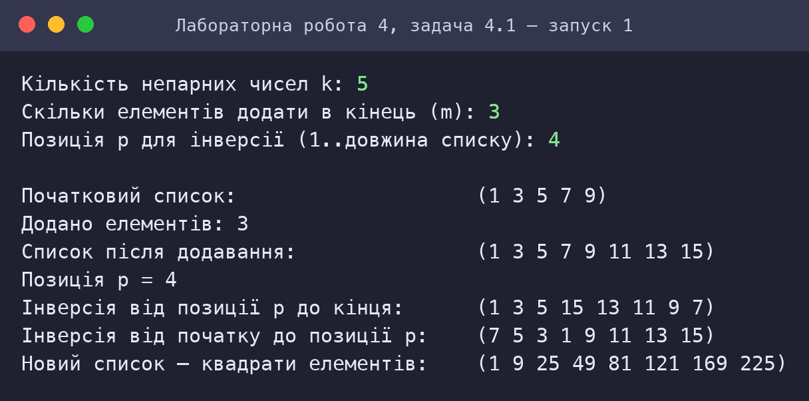
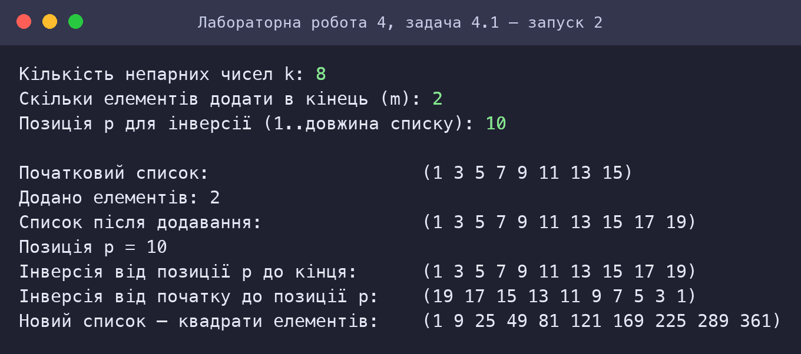
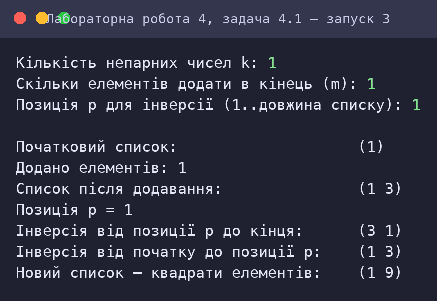
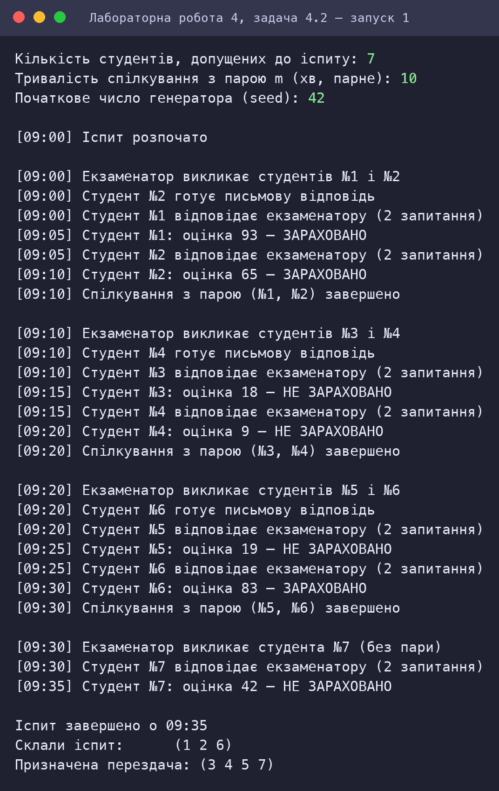
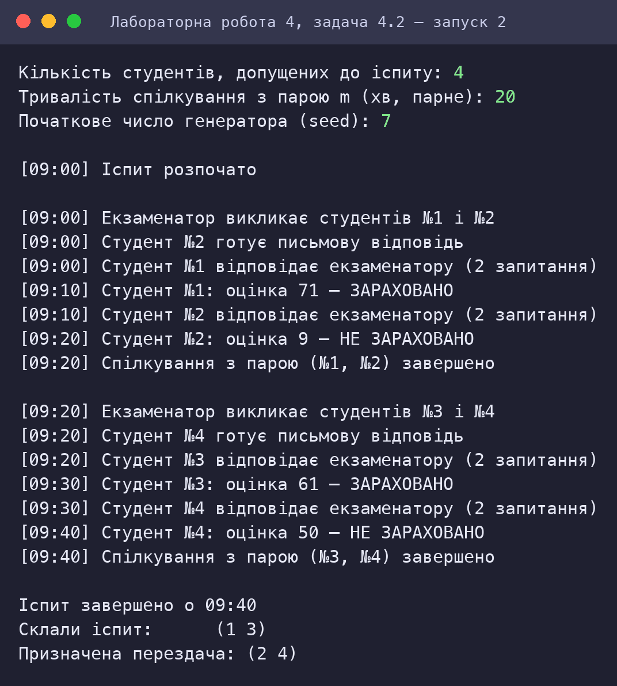

Програмування списків мовами функціонального програмування
Варіант 3
Київ — 2026
Мета роботи
Мета подана за методичними вказівками до лабораторних занять з дисципліни «Функціональне програмування» (Київ, 2025).
Умова завдання
Варіант 3. Умова наведена з методичних вказівок.
Задача 4.1
3.1 Згенерувати список непарних натуральних чисел (натуральні числа ≥ 1), задавши їх кількість. Вивести створений список. Виконати такі операції:
- додати елементи в кінець списку. Кількість доданих елементів задається;
- інвертувати список із заданої позиції до кінця (до заданої позиції) списку;
- сформувати новий список із елементів, які є квадратами чисел вхідного списку.
Задача 4.2
3.2 Написати код, що моделює процес здачі усних іспитів в ЗВО в режимі real time. Студенти, що допущені на іспит, сформовані у список. В процесі проходження іспиту екзаменатор викликає перших двох студентів зі списку, які отримують запитання. Поки один студент спілкується з екзаменатором, другий готує письмову відповідь. Екзаменатор задає по два запитання, відповідь на які мають дати студенти. Після спілкування з двома студентами тривалістю m хвилин, до екзаменатора викликають наступні два студента. Якщо відповіді студентів не зараховуються, то формується новий список студентів на перездачу. Вивести на екран списки студентів, які здали іспит та список тих, кому призначена перездача. Студентів можна ідентифікувати порядковими номерами.
Аналіз задачі та математичне забезпечення
Задача 4.1: Список непарних чисел
Подання даних і операції
Список у Scheme — це ланцюжок пар (cons-комірок): (cons 1 (cons 3 '())) = (1 3). Усі операції реалізовані рекурсивно над структурою списку без зміни існуючих комірок (структурна незмінність — старий список залишається коректним).
| Операція | Процедура | Ідея | Складність |
|---|---|---|---|
| Перші k непарних | odd-list, odds-from | (cons first (odds-from (+ first 2) (− k 1))) | O(k) |
| Додавання m елементів у кінець | add-to-end, my-append | нові значення продовжують послідовність: last + 2, last + 4, …; my-append копіює перший список і прикріплює другий | O(len + m) |
| Інверсія від позиції p до кінця | reverse-from | (перші p − 1 елементів) + reverse(решта) — take, drop, my-reverse | O(len) |
| Інверсія від початку до позиції p | reverse-to | reverse(перші p елементів) + (решта) | O(len) |
| Квадрати | squares | відображення f(x) = x² | O(len) |
my-reverse — хвостова рекурсія з акумулятором (reverse-acc): елементи по одному «переносяться» на акумулятор, що дає обернений список за O(n) без вкладених викликів. Решта процедур використовують звичайну рекурсію з побудовою результату через cons.
Приклад
k = 5, m = 3, p = 4: список (1 3 5 7 9) → після додавання (1 3 5 7 9 11 13 15); інверсія від позиції 4: (1 3 5 15 13 11 9 7); інверсія до позиції 4: (7 5 3 1 9 11 13 15); квадрати: (1 9 25 49 81 121 169 225).
Задача 4.2: Модель усного іспиту
Модель
Чергу студентів подано списком (1 2 … n). Екзаменатор працює з парами: перший студент A відповідає екзаменатору (m/2 хв), тоді як другий B готує письмову відповідь; потім B відповідає (ще m/2 хв) — разом спілкування з парою триває m хвилин. Після цього викликається наступна пара. Якщо студентів непарна кількість, останній відповідає сам (m/2 хв).
«Реальний час» моделюється годинником clock — кількість хвилин від початку іспиту (початок о 09:00); кожна подія виводиться з міткою часу [ГГ:ХХ]. Затримки реального часу (sleep) у R5RS немає; модель дискретних подій відтворює хронологію та є відтворюваною.
Оцінювання
Результат відповіді студента — псевдовипадкове число 0…100 (лінійний конгруентний генератор s′ = (s·1103515245 + 12345) mod 231, значення (s′ div 65536) mod 101); початкове число seed вводиться користувачем. Відповідь зараховується при балі ≥ 60; інакше студент потрапляє до списку перездачі. Результати накопичуються у двох списках passed і retake.
Рекурсивна схема без змінних стану
Усі змінні стани — черга, годинник, списки, зерно генератора — передаються параметрами рекурсивної процедури run-exam; кожна пара обробляється викликом run-pair, який повертає оновлені списки й зерно наступному кроку. Присвоєнь немає. Інваріанти (перевірено тестами): кожен студент потрапляє рівно в один зі списків; час завершення = ⌊n/2⌋·m + (m/2, якщо n непарне).
HIPO-діаграма (схема виклику процедур)
Діаграма показує ієрархію викликів процедур (стрілка A → B означає, що A викликає B); блоки з рекурсією виділено. Допоміжні процедури введення даних (ask-…) для наочності опущено.
Задача 4.1: Список непарних чисел

| Процедура | Вхід (Input) | Обробка / вихід (Process → Output) |
|---|---|---|
main | k, m, p | виклик run |
odd-list / odds-from | k | список перших k непарних |
add-to-end | lst, m | список з m новими елементами в кінці |
reverse-from / reverse-to | lst, p | список з інверсією частини |
squares | lst | список квадратів |
my-append, my-reverse, take, drop | списки | допоміжні операції над списками |
Задача 4.2: Модель усного іспиту

| Процедура | Вхід (Input) | Обробка / вихід (Process → Output) |
|---|---|---|
main | n, m, seed | виклик run |
run-exam | queue, m, clock, passed, retake, seed | (passed retake clock) |
run-pair / run-single | студенти, стан | обробка пари або одного студента |
examine / verdict | id, start, dur, seed | (склав?, нове зерно) з виведенням подій |
add-result | склав?, id, passed, retake | оновлені списки |
next-seed / score-of | seed | псевдовипадкова оцінка 0..100 |
Код
Код наведено текстом (не скріншотом). Файли можна завантажити та запустити в Dr.Racket або Guile.
(main). Перевірено: Racket 9.3 (R5RS) та Guile 3.0 дають однаковий результат; відмінності лише в записі дійсних чисел (наприклад, 1.0e-4 і 0.0001).Задача 4.1: Список непарних чисел
⬇ task1_odd_list.scm;; =====================================================================
;; ЛР4, варіант 3, задача 3.1. Робота зі списком непарних натуральних чисел
;; - згенерувати список перших k непарних чисел (1, 3, 5, ...) і вивести його;
;; - додати в кінець списку m нових елементів (продовження послідовності непарних чисел);
;; - інвертувати список із заданої позиції p до кінця; а також від початку до позиції p;
;; - сформувати новий список із квадратів чисел вхідного списку.
;; Усі процедури — рекурсивні, без зміни стану (set!, let не використовуються).
;; =====================================================================
;; ---------- Базові процедури над списками ----------
(define (my-length lst)
(if (null? lst) 0 (+ 1 (my-length (cdr lst)))))
(define (my-append a b)
(if (null? a) b (cons (car a) (my-append (cdr a) b))))
;; Інверсія списку хвостовою рекурсією з акумулятором
(define (my-reverse lst)
(reverse-acc lst '()))
(define (reverse-acc lst acc)
(if (null? lst) acc (reverse-acc (cdr lst) (cons (car lst) acc))))
;; Перші p елементів і решта (позиції рахуються з 1)
(define (take lst p)
(if (or (= p 0) (null? lst)) '() (cons (car lst) (take (cdr lst) (- p 1)))))
(define (drop lst p)
(if (or (= p 0) (null? lst)) lst (drop (cdr lst) (- p 1))))
(define (last-element lst)
(if (null? (cdr lst)) (car lst) (last-element (cdr lst))))
;; ---------- Генерація ----------
;; k непарних чисел, починаючи з first (first — непарне)
(define (odds-from first k)
(if (= k 0) '() (cons first (odds-from (+ first 2) (- k 1)))))
(define (odd-list k) (odds-from 1 k))
;; ---------- Додавання елементів у кінець ----------
;; Нові елементи продовжують послідовність: після останнього x йдуть x+2, x+4, ...
(define (add-to-end lst m)
(my-append lst (odds-from (if (null? lst) 1 (+ 2 (last-element lst))) m)))
;; ---------- Інверсія частини списку ----------
;; Від позиції p до кінця: (e1 ... e_(p-1)) + інверсія (e_p ... e_n)
(define (reverse-from lst p)
(my-append (take lst (- p 1)) (my-reverse (drop lst (- p 1)))))
;; Від початку до позиції p: інверсія (e1 ... e_p) + (e_(p+1) ... e_n)
(define (reverse-to lst p)
(my-append (my-reverse (take lst p)) (drop lst p)))
;; ---------- Квадрати ----------
(define (squares lst)
(if (null? lst) '() (cons (* (car lst) (car lst)) (squares (cdr lst)))))
;; ---------- Інтерфейс ----------
(define (show label lst)
(display label) (display lst) (newline))
(define (main)
(display "Кількість непарних чисел k: ") (ask-m (read)))
(define (ask-m k)
(display "Скільки елементів додати в кінець (m): ") (ask-p k (read)))
(define (ask-p k m)
(display "Позиція p для інверсії (1..довжина списку): ") (run k m (read)))
(define (run k m p)
(newline)
(steps (odd-list k) m p))
(define (steps lst m p)
(show "Початковий список: " lst)
(steps2 (add-to-end lst m) m p))
(define (steps2 ext m p)
(display "Додано елементів: ") (display m) (newline)
(show "Список після додавання: " ext)
(display "Позиція p = ") (display p) (newline)
(show "Інверсія від позиції p до кінця: " (reverse-from ext p))
(show "Інверсія від початку до позиції p: " (reverse-to ext p))
(show "Новий список — квадрати елементів: " (squares ext)))
Задача 4.2: Модель усного іспиту
⬇ task2_exam.scm;; =====================================================================
;; ЛР4, варіант 3, задача 3.2. Модель усного іспиту в режимі «реального часу».
;; Допущені до іспиту студенти утворюють список (ідентифікатори — порядкові номери).
;; Екзаменатор викликає перших двох студентів зі списку. Поки перший відповідає
;; екзаменатору (задаються 2 запитання), другий готує письмову відповідь; потім вони
;; міняються. Спілкування з парою триває m хвилин, після чого викликаються наступні двоє.
;; Хто не склав — потрапляє до списку на перездачу.
;;
;; Час моделюється змінною clock (хвилини від початку іспиту, початок о 09:00).
;; Оцінки студентів — псевдовипадкові (лінійний конгруентний генератор), початкове
;; значення seed вводиться з клавіатури, тому прогін відтворюваний.
;; Зміна стану не використовується: список, годинник, генератор та результати
;; передаються параметрами рекурсивної процедури.
;; =====================================================================
;; ---------- Список студентів: 1, 2, ..., n ----------
(define (students-from i n)
(if (> i n) '() (cons i (students-from (+ i 1) n))))
;; ---------- Псевдовипадкові числа ----------
(define (next-seed s) (remainder (+ (* s 1103515245) 12345) 2147483648))
(define (score-of s) (remainder (quotient s 65536) 101)) ; оцінка 0..100
(define pass-threshold 60)
;; ---------- Допоміжне ----------
(define (my-append a b)
(if (null? a) b (cons (car a) (my-append (cdr a) b))))
(define (pad2 x) (if (< x 10) (string-append "0" (number->string x)) (number->string x)))
(define (time->string clock)
(string-append (pad2 (+ 9 (quotient clock 60))) ":" (pad2 (remainder clock 60))))
(define (say clock text)
(display "[") (display (time->string clock)) (display "] ") (display text) (newline))
;; ---------- Відповідь одного студента ----------
;; Студент відповідає екзаменатору протягом dur хвилин, починаючи з моменту start.
;; Повертає список (склав? новий-seed).
(define (examine id start dur seed)
(say start (string-append "Студент №" (number->string id) " відповідає екзаменатору (2 запитання)"))
(verdict id (+ start dur) (score-of (next-seed seed)) (next-seed seed)))
(define (verdict id clock score seed)
(say clock (string-append "Студент №" (number->string id) ": оцінка " (number->string score)
(if (>= score pass-threshold) " — ЗАРАХОВАНО" " — НЕ ЗАРАХОВАНО")))
(list (>= score pass-threshold) seed))
;; ---------- Внесення результату до списків ----------
;; Повертає (passed retake) після додавання id до відповідного списку
(define (add-result passed? id passed retake)
(if passed?
(list (my-append passed (list id)) retake)
(list passed (my-append retake (list id)))))
;; ---------- Основна рекурсія ----------
;; queue — черга студентів; m — тривалість спілкування з парою (хв); clock — годинник;
;; passed, retake — накопичені списки; seed — стан генератора.
(define (run-exam queue m clock passed retake seed)
(cond ((null? queue) (list passed retake clock))
((null? (cdr queue)) (run-single (car queue) m clock passed retake seed))
(else (run-pair (car queue) (cadr queue) (cddr queue) m clock passed retake seed))))
;; Пара студентів a та b: спершу відповідає a (b готується), потім b
(define (run-pair a b rest m clock passed retake seed)
(say clock (string-append "Екзаменатор викликає студентів №" (number->string a) " і №" (number->string b)))
(say clock (string-append "Студент №" (number->string b) " готує письмову відповідь"))
(pair-second a b rest m clock passed retake (examine a clock (quotient m 2) seed)))
(define (pair-second a b rest m clock passed retake res-a)
(pair-finish a b rest m clock (add-result (car res-a) a passed retake)
(examine b (+ clock (quotient m 2)) (quotient m 2) (cadr res-a))))
(define (pair-finish a b rest m clock lists res-b)
(say (+ clock m) (string-append "Спілкування з парою (№" (number->string a) ", №" (number->string b) ") завершено"))
(newline)
(next-round rest m (+ clock m) (add-result (car res-b) b (car lists) (cadr lists)) (cadr res-b)))
(define (next-round rest m clock lists seed)
(run-exam rest m clock (car lists) (cadr lists) seed))
;; Останній студент без пари (непарна кількість)
(define (run-single a m clock passed retake seed)
(say clock (string-append "Екзаменатор викликає студента №" (number->string a) " (без пари)"))
(single-finish a m clock passed retake (examine a clock (quotient m 2) seed)))
(define (single-finish a m clock passed retake res)
(newline)
(finish-single-lists (+ clock (quotient m 2)) (add-result (car res) a passed retake)))
(define (finish-single-lists clock lists)
(list (car lists) (cadr lists) clock))
;; ---------- Інтерфейс ----------
(define (main)
(display "Кількість студентів, допущених до іспиту: ") (ask-m (read)))
(define (ask-m n)
(display "Тривалість спілкування з парою m (хв, парне): ") (ask-seed n (read)))
(define (ask-seed n m)
(display "Початкове число генератора (seed): ") (run n m (read)))
(define (run n m seed)
(newline)
(say 0 "Іспит розпочато")
(newline)
(print-result (run-exam (students-from 1 n) m 0 '() '() seed)))
(define (print-result r)
(display "Іспит завершено о ") (display (time->string (caddr r))) (newline)
(display "Склали іспит: ") (display (car r)) (newline)
(display "Призначена перездача: ") (display (cadr r)) (newline))
Скріншот роботи та результату
Знімки консолі відтворюють роботу програм: запуск виконано в інтерпретаторі Guile 3.0 (R5RS-сумісний); введені користувачем значення виділено зеленим. Для кожного запуску наведено умови та результат.
Задача 4.1: Список непарних чисел



Задача 4.2: Модель усного іспиту


Оцінка достовірності результату
Список непарних: додавання, інверсії, квадрати
| Вхідні дані | Результат програми | Еталон | |
|---|---|---|---|
| k=5, m=3, p=4 | (1 3 5 15 13 11 9 7) | 1 3 5 15 13 11 9 7 | ✓ |
| k=1, m=1, p=1 | (3 1) | 3 1 | ✓ |
| k=8, m=2, p=10 | (1 3 5 7 9 11 13 15 17 19) | 1 3 5 7 9 11 13 15 17 19 | ✓ |
| k=10, m=0, p=3 | (1 3 19 17 15 13 11 9 7 5) | 1 3 19 17 15 13 11 9 7 5 | ✓ |
| k=6, m=5, p=1 | (21 19 17 15 13 11 9 7 5 3 1) | 21 19 17 15 13 11 9 7 5 3 1 | ✓ |
| k=6, m=5, p=11 | (1 3 5 7 9 11 13 15 17 19 21) | 1 3 5 7 9 11 13 15 17 19 21 | ✓ |
| k=3, m=7, p=6 | (1 3 5 7 9 19 17 15 13 11) | 1 3 5 7 9 19 17 15 13 11 | ✓ |
7 / 7 збігів.
Іспит: списки, час, відсутність втрат студентів
| Вхідні дані | Результат програми | Еталон | |
|---|---|---|---|
| n=7, m=10, seed=42 | склали [1, 2, 6]; перездача [3, 4, 5, 7]; завершено на 35 хв | склали [1, 2, 6]; перездача [3, 4, 5, 7]; 35 хв | ✓ |
| n=4, m=20, seed=7 | склали [1, 3]; перездача [2, 4]; завершено на 40 хв | склали [1, 3]; перездача [2, 4]; 40 хв | ✓ |
| n=1, m=10, seed=1 | склали [1]; перездача []; завершено на 5 хв | склали [1]; перездача []; 5 хв | ✓ |
| n=12, m=14, seed=2026 | склали [1, 3, 6, 8, 9, 12]; перездача [2, 4, 5, 7, 10, 11]; завершено на 84 хв | склали [1, 3, 6, 8, 9, 12]; перездача [2, 4, 5, 7, 10, 11]; 84 хв | ✓ |
| n=9, m=10, seed=99 | склали [2, 4, 9]; перездача [1, 3, 5, 6, 7, 8]; завершено на 45 хв | склали [2, 4, 9]; перездача [1, 3, 5, 6, 7, 8]; 45 хв | ✓ |
5 / 5 збігів.
Аналіз коду на відповідність критеріям простоти та Clean code
Код проаналізовано за критеріями чистого коду та за вимогами завдання: прочитано кожну програму, автоматично пораховано метрики й виконано пошук заборонених конструкцій. Нижче — критерії, вимірювання та висновки; випадки, де за результатами аналізу код було змінено, позначені «знайдено й виправлено».
Критерії
| Критерій | Що перевірялось |
|---|---|
| Іменування | імена відображають зміст (дієслова для дій, іменники для даних) |
| Малі функції | одна процедура — одна відповідальність; довжина процедур |
| Відсутність побічних ефектів | немає set!, змінних стану; значення передаються параметрами |
| Відповідність обмеженням | заборонені конструкції (let, let*, letrec, do, while, for, loop) |
| Простота | немає дублювання обчислень, зайвих абстракцій; коментарі пояснюють «чому», а не «що» |
| Коректність і тестованість | чисті процедури можна перевірити окремо (див. розділ «Оцінка достовірності») |
Задача 4.1: Список непарних чисел
| Рядків | Рядків коду | Рядків коментарів | Процедур | Середня довжина | Максимальна довжина |
|---|---|---|---|---|---|
| 82 | 46 | 20 | 20 | 2.3 | 7 |
| let | let* | letrec | set! | do | while/for/loop |
|---|---|---|---|---|---|
| 0 | 0 | 0 | 0 | 0 | 0 |
Висновки перевірки
- Кожна операція — окрема коротка процедура з зрозумілим іменем; допоміжні процедури (
take,drop,my-reverse) повторно використовуються в обох інверсіях — немає дублювання. - Усі структури незмінні; рекурсія спрощує обґрунтування правильності.
- Зауваження:
add-to-endіmy-appendкопіюють весь перший список (O(n)); для частого додавання краще структура «два списки» (черга) або акумулювання у зворотному порядку. - Крайні випадки (p = 1, p = довжина, m = 0) перевірено автоматично.
Задача 4.2: Модель усного іспиту
| Рядків | Рядків коду | Рядків коментарів | Процедур | Середня довжина | Максимальна довжина |
|---|---|---|---|---|---|
| 111 | 63 | 28 | 24 | 2.6 | 5 |
| let | let* | letrec | set! | do | while/for/loop |
|---|---|---|---|---|---|
| 0 | 0 | 0 | 0 | 0 | 0 |
Висновки перевірки
- Логіка розбита на невеликі процедури (
examine,verdict,add-result); псевдовипадковий генератор винесено окремо — результат відтворюваний і тестується. - Знайдено й виправлено: у першій версії час відповіді обчислювався з «заглушкою» (
(quotient 1 1)) і мітки часу не відповідали умові; перероблено:examineприймає початок і тривалість, а події «відповідає» та «оцінка» друкуються в моменти start і start + m/2. - Зауваження (запах коду):
run-pair/pair-second/pair-finishмають по 7–8 параметрів, бо заборонено змінний стан. У мові з записами це оформлюється структурою «стан іспиту»; для лабораторної збережено списки параметрів, щоб не вводити додаткову абстракцію.
Примітка: метрики розраховано автоматично скриптом (кількість рядків, процедур, довжина процедур, пошук заборонених конструкцій).
Висновок
Створено програми для роботи зі списками: генерація списку непарних чисел, додавання елементів у кінець, інверсія частин списку та побудова списку квадратів, а також модель усного іспиту, що відтворює хронологію виклику пар студентів, паралельну підготовку другого студента та формування списків «склав» і «перездача». Показано, що списки Scheme природно підтримують рекурсивну обробку без змінного стану: усі змінні стани передаються параметрами. Автоматичні перевірки (12 порівнянь із Python) підтвердили правильність операцій над списками та інваріанти моделі іспиту.